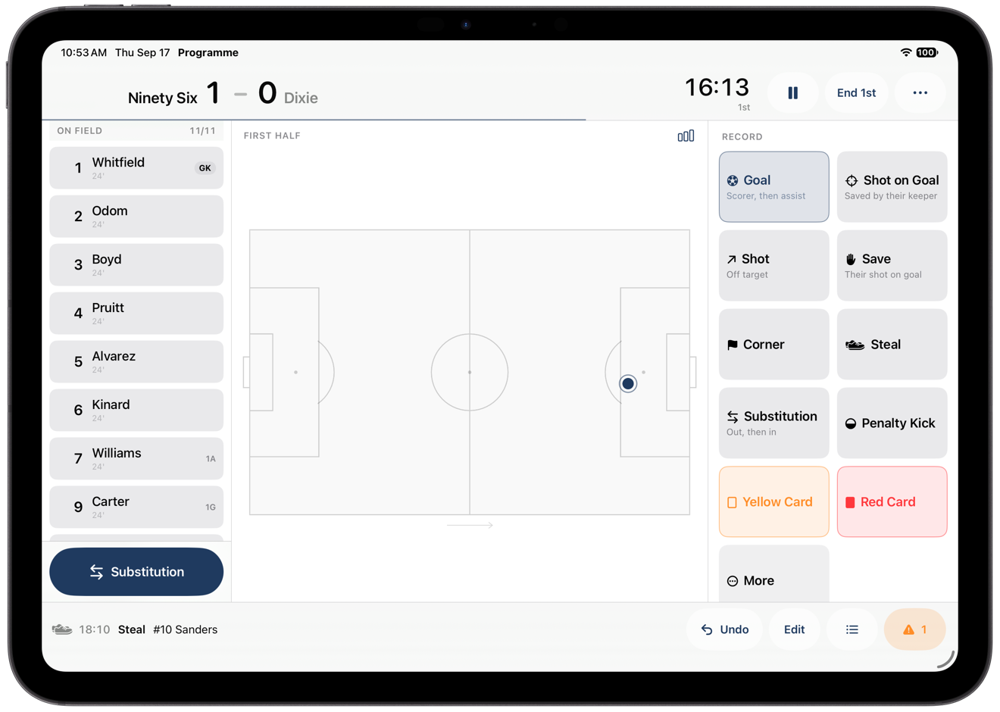

Programme
Soccer scorekeeping for iPad.
Programme records the match from the sideline, turns every event into reliable statistics, and keeps the whole season in view.

01 / Live match
Live scoring
Score, clock, lineup, pitch, and match actions stay visible in the same workspace.
Screenshot 01Live scorerLandscape iPad · score, clock, lineup, pitch, and full event palette visible
02 / Team + pitch
Lineups and shot locations
Manage who is on the field and record where shots happened without leaving the match.
Screenshot 02Lineup + substitutionsLandscape iPad · on-field players, bench, and a pending substitution
Screenshot 03Shot locationsLandscape iPad · pitch and several authentic markers visible
03 / Record
Match and season statistics
Recorded events feed match statistics, player totals, goalkeeper numbers, and season results.
Screenshot 04Season statisticsLandscape iPad · record, leaders, and player totals
Screenshot 05Event logLandscape iPad · real match events and timestamps
Screenshot 06ReviewLandscape iPad · a real item needing attention
04 / Output
Export your data
Create match reports, CSV files, season totals, Programme archives, and a MaxPreps entry summary.
Screenshot 07ExportsLandscape iPad · formats selected and at least one generated file ready to share
Output 08Generated reportReal Programme PDF/stat sheet preview · not a web recreation